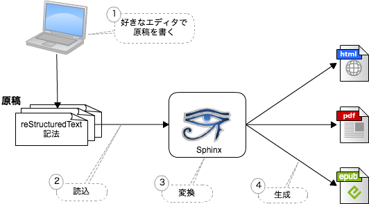

Sphinxサイト ミーティング 6/30¶
- 日時: 2017/06/30 10:00 - 12:00
- 参加者: shimizukawa, tk0miya, usaturn, r_rudi
進捗状況について¶
まず進捗状況の共有を行いました。 前回ミーティング Sphinxサイト ミーティング 5/13 からの進捗確認。
- サイト概要: 未着手
- Sphinの紹介: 大まかに完了。 肉付けと見直しが必要
- インストールページ: 完了
検討課題¶
Sphinxの紹介で、以下の絵のような、Sphinxの全体像を 表すイメージ図が必要

sphinx-doc.org の紹介とリンクを追加しよう
進捗状況について で確認したような進捗を自動的に 確認する方法
議事録に補足があればbitbucketの ここ でコメントを 付けてください。